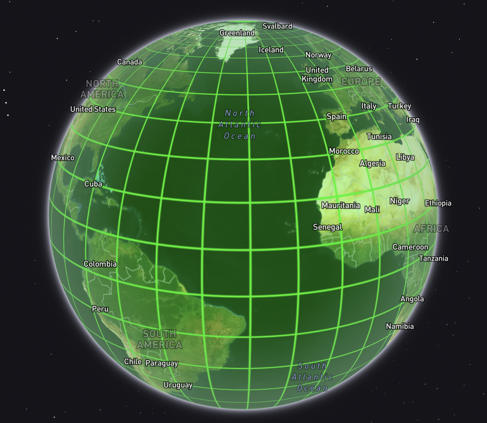
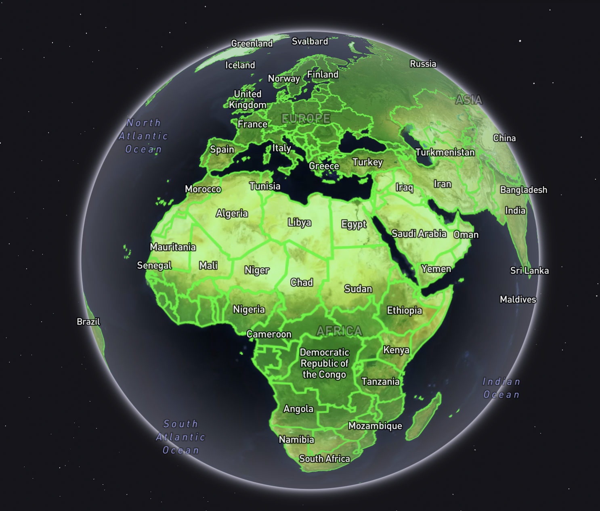
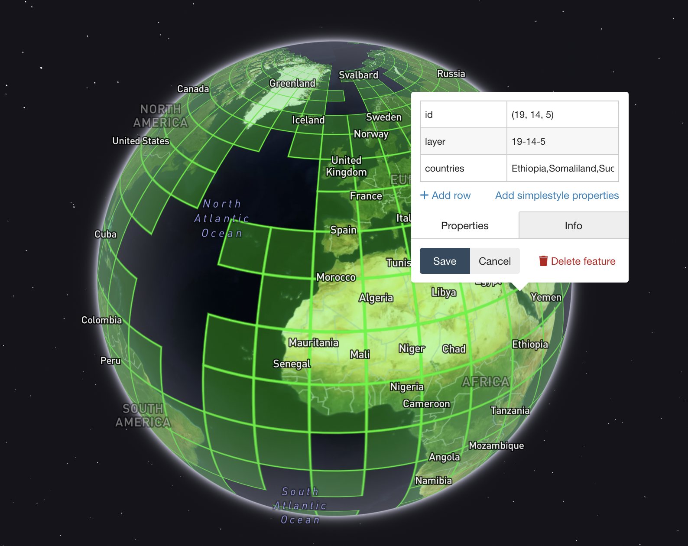

Land ho!

The problem⌗
Mapbox is occasionally referred to - not uncharitably - as “The Tile Company”. It’s true; we deal with big amounts of data, and the most common map/reduce unit we use is the old standby Mercator/XYZ tile. My past and present colleagues have built some really cool tools to make these patterns easier - witness mercantile and supermercado, for example - but sometimes there’s a specific problem to solve ad-hoc. In this case:
How can I get the geometries of every map tile at a given zoom level that intersects land?
There’s a whole lotta water out there, and as much as I’d like the odd view of shipping lanes, we do not render imagery beyond a few kilometers past the world’s coastlines. I need to knock something together to find the tiles of dry land.
The solution⌗
The answer is open data. (It’s always open data.) Specifically the Natural Earth project, which provides “land” polygons, in addition to all sorts of other goodies.
On top of that, we’ll use one of the tile utilities mentioned above - mercantile - plus ogr2ogr, the general-purpose Swiss army knife of geodata.
Set some parameters⌗
We’ll want to define global variables for two things: desired tile size (set as metatile zoom level), and bounding box (the whole world in this case):
ZOOM=5
BBOX="[-180,-90,180,90]"
Generate global tiles⌗
Mercantile is a python-based command line tool that can generate tile addresses and geometries. We’ll chain a few things together here to generate line-delimited GeoJSON of every tile in the world at zoom 5:
echo ${BBOX} | \
mercantile tiles ${ZOOM} | \
mercantile shapes > \
z${ZOOM}_metatiles.geojsonl

Download the land data⌗
We’ll grab country polygons, and decompress them:
curl https://www.naturalearthdata.com/http//www.naturalearthdata.com/download/10m/cultural/ne_10m_admin_0_countries.zip
unzip ne_10m_admin_0_countries.zip

Combine the two⌗
This is the really facinating bit. I’m accustomed to using PostGIS for all my spatial SQL needs, but I’m getting more and more fond of the capabilities of SpatiaLite, which is a spatial function module for SQLite. And guess what you can use right out of the box with the aforementioned ogr2ogr toolset? Yep; SQLite. There’s actually quite a bit you can shoehorn into the inline -sql argument:
ogr2ogr \
-f GeoJSON \
z${ZOOM}_land_metatiles.geojson \
z${ZOOM}_metatiles.geojsonl \
-dialect sqlite \
-sql "
SELECT
m.id,
REPLACE(REPLACE(REPLACE(m.id,', ','-'),'(',''),')','') AS layer,
m.Geometry,
GROUP_CONCAT(c.Name) AS countries
FROM 'z${ZOOM}_metatiles.geojsonl'.z${ZOOM}_metatiles m
JOIN 'ne_10m_admin_0_countries.shp'.ne_10m_admin_0_countries c
ON ST_Intersects(m.Geometry, c.Geometry)
WHERE c.Name NOT IN ('Antarctica')
GROUP BY m.id,m.Geometry
"
Catch all that? In the query above, we do a spatial INNER join between the countries and the tiles, keeping the geometries of the tiles that intersect any countries. Then we reformat the XYZ order of the tile ID to be a bit more friendly, and tack on a list of every intersecting country in a given tile. To top it off, we can exclude Antarctica (or any other named country polygon).
. . . and there’s what we were looking for in the first place! GeoJSON of all the Z5 tiles that intersect land!

The wrap⌗
Here’s the whole script, executable like so if you want all the tiles intersecting land at zoom level 5:
bash land_tiles.sh 5
# BUILD A DATASET OF TILES AT A GIVEN ZOOM LEVEL THAT INTERSECT LAND
# USAGE: bash land_tiles.sh <integer zoom level between 0 and 22>
# Set target metatile zoom
ZOOM=$1
BBOX="[-180,-90,180,90]"
# Create metatiles at desired zoom
echo ${BBOX} | \
mercantile tiles ${ZOOM} | \
mercantile shapes > \
z${ZOOM}_metatiles.geojsonl
# Get Natural Earth countries
curl -O https://naciscdn.org/naturalearth/10m/cultural/ne_10m_admin_0_countries.zip
unzip ne_10m_admin_0_countries.zip
# Join countries and metatiles
ogr2ogr \
-f GeoJSON \
z${ZOOM}_land_metatiles.geojson \
z${ZOOM}_metatiles.geojsonl \
-dialect sqlite \
-sql "
SELECT
m.id,
REPLACE(REPLACE(REPLACE(m.id,', ','-'),'(',''),')','') AS layer,
m.Geometry,
GROUP_CONCAT(c.Name) AS countries
FROM 'z${ZOOM}_metatiles.geojsonl'.z${ZOOM}_metatiles m
JOIN 'ne_10m_admin_0_countries.shp'.ne_10m_admin_0_countries c
ON ST_Intersects(m.Geometry, c.Geometry)
WHERE c.Name NOT IN ('Antarctica')
GROUP BY m.id,m.Geometry
"
# Clean up
rm -rf ne_10m_admin_0_countries.* z${ZOOM}_metatiles.geojsonl
All visualizations here were done with geojson.io.